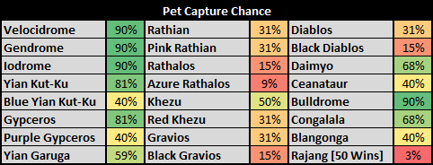

Upon getting a Partner you will be prompted to choose if you want to make Equipment for them or yourself before hitting crafting menus. Which option you choose is immediately obvious because the partner will take your place if you are making things for them.
On the blacksmith navigate to the Armour section and then choose which type of armour you wish to make.
All armours created before G Rank use functionally the same system that is used in current mainline games, after crafting the base armour with materials you simply upgrade using Armour Spheres. After hitting Lv7 you may be able to upgrade to a second tier of armour (F, FX, HS etc.) which will use items again but Lv2-6 will always use Armour Spheres. Armour Spheres are found naturally by just hunting things or by mining.
| Icon | CN Name | EN Name | Mining | Quest Rewards | GCP / NP / Festi Points |
| 鎧玉 | Armour Sphere | HR1-2 | HR1-2 Quests | 30 / 6 / 20 | |
| 上鎧玉 | Armour Sphere+ | 40 / 8 / 30 | |||
| 尖鎧玉 | Adv Armour Sphere | HR3-4 | HR3-4 Quests | 50 / 10 / 35 | |
| 堅鎧玉 | Hard Armour Sphere | 60 / 12 / 40 | |||
| 重鎧玉 | Heavy Armour Sphere | HR5 / G Rank | HR5 Standard Quests | 70 / 14 / 50 | |
| 真鎧玉 | True Armour Sphere | 80 / 16 / 55 | |||
| 剛鎧玉 | Strong Armour Sphere | Rewards Only | HR5 Gou or Exotics, HR6 Supremacy Quests | 90 / 18 / 65 | |
| 天鎧玉 | Divine Armour Sphere | 100 / 20 / 70 |
G Rank armour uses materials for all upgrades, there are no Armour Spheres to simplify this process.
Armour skills can be viewed on the third page or so of an armour's information while crafting by pressing Square on a PS Controller or Z on keyboard and then changing pages with L1/R1 on a PS Controller or F and C on a Keyboard
To identify the skills you can either compare against the index of skills in the Armour Skills List section on the sidebar or use the Skill Hunter tool located in the Tools section of the sidebar to automatically identify most skills if they visible on screen in the context of Armour stats.
Normal armours are identical to the Mainline game except in that they are both crafted and upgraded using materials, rather than utilising Armour Stones.
SP Armours are somewhat redundant now, their primary long term use is simply in gathering sets.
Upon Hitting HR5 you can craft SP Armours and Gems. These are intended to be paired together, SP armour has no natural skill points and as such depends on SP gems to be made useful.
SP gems generally give large number of points in various skills, such as one that grants +10 Hearing Protection and +15 Psychic (instantly enabling Autotracker and Earplugs). SP Armour has a single Decoration slot for these Gems.
Both SP Armour and Gems are crafted in the standard armour or gem menus respectively. They simply require materials that can only be found on HR5 quests to be crafted.
SP Armour comes in a number of colours per set piece, these colours are purely aesthetic and depend on coloured grasses to be made. These grasses may be traded to the Veggie Elder (in the Gorge) to get different colours that you may be struggling to obtain.
HC or Hardcore Armours are upgraded versions of Standard or Premium armours. They are mostly the same as any standard armour with the key difference being that they cause Health Regen on any HC quests when your health bar is above 50% and a variable amount of stamina depending on total pieces equipped.
| Pieces | Stamina Req | Regen Speed |
| 1 Piece | 150 Stamina | 1 HP / 8 Seconds |
| 2 Pieces | 125 Stamina | 1 HP / 4 Seconds |
| 3 Pieces | 100 Stamina | 1 HP / 2 Seconds |
| 4 Pieces | 75 Stamina | 1 HP / 1.5 Seconds |
| 5 Pieces | 50 Stamina | 1 HP / 1 Seconds |
HS or Hunting Safeguard Armours are upgraded versions of HC armours. They have all the effects of HC armour and give additional defensive buffs if used on a HC Quest with either a HC Weapon or a Heavenly Storm or higher weapon.
| Pieces | Stamina Req | Regen Speed | Def Buffs |
| 1 Piece | 150 Stamina | 1 HP / 8 Seconds | +20 Def / 10% Damage Reduction |
| 2 Pieces | 125 Stamina | 1 HP / 4 Seconds | +40 Def / 14% Damage Reduction |
| 3 Pieces | 100 Stamina | 1 HP / 2 Seconds | +60 Def / 24% Damage Reduction |
| 4 Pieces | 75 Stamina | 1 HP / 1.5 Seconds | +80 Def / 27% Damage Reduction |
| 5 Pieces | 50 Stamina | 1 HP / 1 Seconds | +100 Def / 30% Damage Reduction |
G Rank Armours are the standard armour used at G rank, they are mostly the same as standard armours in how they function but grant two bonuses based on the total number of pieces equipped.
| Pieces | Attack Bonus | Skill Limit |
| 1-2 Pieces | - | 10 |
| 3-4 Pieces | +30 True Raw | 11 |
| 5 Pieces | +30 True Raw | 12 |
G Rank Armours are also the main source of G Rank decorations. Upon hitting Level 7 in their individual upgrade tiers (G/GF/GX) they can be converted into various decorations. See the G Rank section for more information on this system.
GS, GP or G Hunting Safeguard Armours are G Rank upgraded versions of Premium armours. This upgrade path is only available to Premium armours such as those in Premium Kits or obtained via Lottery.
These pieces offer all the advantages of HS armours while also counting as a standard G Rank Armour piece for the sake of G Rank Armour bonuses as listed above.
| Pieces | Stamina Req | Regen Speed | Def Buffs |
| 1 Piece | 150 Stamina | 1 HP / 8 Seconds | +20 Def / 10% Damage Reduction |
| 2 Pieces | 125 Stamina | 1 HP / 4 Seconds | +40 Def / 14% Damage Reduction |
| 3 Pieces | 100 Stamina | 1 HP / 2 Seconds | +60 Def / 24% Damage Reduction |
| 4 Pieces | 75 Stamina | 1 HP / 1.5 Seconds | +80 Def / 27% Damage Reduction |
| 5 Pieces | 50 Stamina | 1 HP / 1 Seconds | +100 Def / 30% Damage Reduction |
Generally speaking GP armours are slightly worse than standard GX armour in terms of defense but usually make up for it in the variety of skills offered and the ease with which they can fit into clownsuits.
Gou Species or Goushu armours become available after hitting HR5. All Gou Armour pieces require proofs from their associated monster which are tickets given each time you slay a gou monster and 1x Gou Elder Dragon Gem (古龍種的稀玉) from Gou Rukodiora breaks and tail carves. The Gems are 10% Tail carves and Horn breaks on Gou Ruko but there are quests which can cycle in that have 100% chance of giving a gem which is ideal for creating Gou Armours. You will also be given 3 of these gems upon the creation of your first Gou Weapon.
Gou Armours are special in that they provide a Boost or Muscle effect, while active this effect upgrades certain skills by one full level. For example if you had 50 points in Attack granting you the Attack Up (Very large) skill, this would be upgraded to Attack Up [Absolute] if your Muscle Boost was active, functionally giving you 30 Points in attack for free. Not all skills are able to be boosted, check the Armour Skills List section to see which skills can be boosted.
The requirements for activating the Boost depends upon the number of Gou pieces you have equipped, the table below details this:
| Pieces | Boost Requirements |
| 1 Piece | 100% Health / 26 Stamina |
| 2 Pieces | 90% Health / 26 Stamina |
| 3 Pieces | 83% Health / 26 Stamina |
| 4 Pieces | 76% Health / 26 Stamina |
| 5 Pieces | 70% Health / 26 Stamina |
Heavenly Storm or Tenran armours are upgraded versions of Gou Armour pieces that become available at SR100. They are mostly similar to the above Gou armours but grant additional buffs on Gou HC, Supremacy and G Rank Quests if a hunter is using Gou or higher weapons and make it so you have lower rarity requirements for the HC multiplier on HC quests.
The Additional Buffs are obviously only active on the proper quest types with Gou or higher weapons and vary depending on the number of pieces equipped as well as the type of weapon used.
Blademaster weapons have their sharpness colours increase by one level (Green becomes Blue, White becomes Purple, etc.) with 2 or more pieces equipped.
Ranged Weapons have their Critical Distance Multipliers Increased, meaning that at the correct spacing will deal notably more damage. This is only with 2 or more pieces equipped
Bows get buffed Power Coatings, this increases their multiplier to 1.7x up from 1.5x when 2 or more pieces are equipped.
All weapons get Attack and Attribute Up and -1 Rarity Requirements per piece.
| Pieces | Boost Requirements | Additional Buffs |
| 1 Piece | 100% Health | +15 Atk / +2% Attribute / -1 Rarity Req |
| 2 Pieces | 90% Health | +30 Atk / +4% Attribute / -2 Rarity Req |
| 3 Pieces | 83% Health | +45 Atk / +6% Attribute / -3 Rarity Req |
| 4 Pieces | 76% Health | +60 Atk / +8% Attribute / -4 Rarity Req |
| 5 Pieces | 70% Health | +80 Atk / +10% Attribute / -5 Rarity Req |
Supremacy Armours are even further upgraded forms of Gou Armour pieces that become available at SR300. They are basically identical to Heavenly Storm armour but have much lower health requirements to activate the Boost effect.
G Supremacy Armours are available from GR1 and are functionally identical to standard Supremacy armour, they simply have higher defense and upgrading to it requires G Rank materials.
The Additional Buffs are the same as Heavenly Storm and are obviously only active on the proper quest types (Gou HC, Supremacy or G Rank).
| Pieces | Boost Requirements | Additional Buffs |
| 1 Piece | 67% Health | +15 Atk / +2% Attribute / -1 Rarity Req |
| 2 Pieces | 34% Health | +30 Atk / +4% Attribute / -2 Rarity Req |
| 3 Pieces | 1% Health | +45 Atk / +6% Attribute / -3 Rarity Req |
| 4 Pieces | Always Active | +60 Atk / +8% Attribute / -4 Rarity Req |
| 5 Pieces | Always Active | +80 Atk / +10% Attribute / -5 Rarity Req |
It is worth noting that G Supremacy Armour does not count as a standard G Rank armour piece and as such does not count towards the total number of those for the sake of increasing active skill limits or adding raw on G Rank quests.
Burst Armours are the second G Rank level upgrade of Gou armours, they share all the standard Buffs of Supremacy.
Burst Armours are available from GR1 but require materials from G Rank Burst Monsters as well as GHC materials to be upgraded.
The Additional Buffs are the same as Heavenly Storm and are obviously only active on the proper quest types (Gou HC, Supremacy or G Rank).
| Pieces | Boost Requirements | Additional Buffs |
| 1 Piece | Always Active | +15 Atk / +2% Attribute / -1 Rarity Req |
| 2 Pieces | Always Active | +30 Atk / +4% Attribute / -2 Rarity Req |
| 3 Pieces | Always Active | +45 Atk / +6% Attribute / -3 Rarity Req |
| 4 Pieces | Always Active | +60 Atk / +8% Attribute / -4 Rarity Req |
| 5 Pieces | Always Active | +80 Atk / +10% Attribute / -5 Rarity Req |
It is worth noting that Burst Armour does not count as a standard G Rank armour piece and as such does not count towards the total number of those for the sake of increasing active skill limits or adding raw on G Rank quests.
Origin Armours are the third G Rank level upgrade of Gou armours, they share all the standard Buffs of Supremacy.
Origin Armours are available from GR1 but require materials from G Rank Origin Monsters as well as GHC materials to be upgraded.
The Additional Buffs are mostly the same as Burst with some notable differences and generally higher generic buffs. The Blademaster specific buffs only need 1 piece equipped at Origin level but still require you to be on the proper quest type (Gou, Supremacy or G Rank) with a Gou or higher weapon. The Gunner buffs also require only 1 piece equipped by are active on all weapons types while on the appropriate types of quests.
Blademaster weapons have their sharpness colours increase by one level (Green becomes Blue, White becomes Purple, etc.).
Ranged Weapons have their Critical Distance Multipliers Increased, meaning that at the correct spacing will deal notably more damage.
Bows get buffed Power Coatings, this increases their multiplier to 1.7x up from 1.5x.
All weapons get Attack and Attribute Up and -1 Rarity Requirements per piece.
| Pieces | Boost Requirements | Additional Buffs |
| 1 Piece | Always Active | +20 Atk / +3% Attribute / -1 Rarity Req |
| 2 Pieces | Always Active | +40 Atk / +6% Attribute / -2 Rarity Req |
| 3 Pieces | Always Active | +60 Atk / +9% Attribute / -3 Rarity Req |
| 4 Pieces | Always Active | +80 Atk / +12% Attribute / -4 Rarity Req |
| 5 Pieces | Always Active | +110 Atk / +15% Attribute / -5 Rarity Req |
It is worth noting that despite having G Rank skills Origin Armour does not count as a standard G Rank armour piece and as such does not count towards the total number of those for the sake of increasing active skill limits or adding raw on G Rank quests.
Tenrou or Customisable Tower Armours are special armours that are created and upgraded with items exclusively found within the Tower (Sky Corridor). Functionally they are mostly the same as standard armour pieces and have upgrades all the way to GX.
The big difference from standard armours is the fact that Tenrou pieces can be equipped with special Tower Decorations that grant the properties of other armour types.
| Tower Armour Decorations | |
| Effect | Slots |
| Muscle Skill Boost 技能UP之印 | 3 |
| Gou+ Sharpness Level Up 銳利度UP之印 | 3 |
| Origin Attack Up 攻擊力UP之印 | 1 |
| Element / Attribute Up 屬性・狀態UP之印 | 1 |
| Critical Distance Multiplier Up 距離補正之印 | 2 |
| Bow Power Coating Up 強擊瓶UP之印 | 1 |
| Defense Up 防禦力UP之印 | 1 |
| HC Damage Reduction 傷害減輕之印 | 1 |
| HC Health Regeneration 體力自動回復之印 | 1 |
| G Rank Armor (for 11+ skills limit) G級防具之印 | 2 |
It is worth noting that despite having G Rank skills Tenrou Armour does not count as actual G Rank pieces at GX level, this requires using a sigil slot on the above G Rank ARmour sigil and as such it is wise to build around using 3 other actual G Rank pieces if you intend to use these at endgame.
Exotic Armours are special armours that are imports from the Mainline games. They are notable in that each piece has a skill built into them that is always activated regardless of your skill limit or any other Factors. You need to be GR500 in order to upgrade an exotic armour to G or higher as the Exotic monsters are GR500 at G Rank.
Exotic Armours (when upgraded to G or higher) count as Standard G Rank pieces for the sake of increasing the Skill Limit and adding raw.
Zenith Armour falls under two categories: Standard and Premium.
Standard Zenith Armour is created from a specific monster (e.g. Khezu Z Series) or from certain events (e.g. Katante Z Series from Diva Defense). These all have four levels. Z and ZF have only one upgrade each while ZY and ZX have 7. The letters directly correlate to the GR rating of the Zeniths you need to hunt in order to craft them (GR200 for Z, GR400 for ZF, GR600 for ZY and GR800 for ZX) and while they have their Zenith Skill from Z they only attain maximum Skill Points when they are pushed to ZX.
Premium Zenith Armour is created by upgrading premium pieces past GP to ZP level. All ZP upgrades require Zenith Hypnoc parts and Lottery Armours all require an additional 2 tickets which you will need to have either kept from previous lottery gambles or use the lottery system again to acquire them fresh. The actual benefits of upgrading these pieces varies from a complete overhaul (e.g. Lien GP to ZP completely changes all skills and pushes it to one of the best kits in the game) to simply adding a Zenith Skill while keeping their existing stats and skills (e.g. Cielo ZP).
These armours all have their associated Zenith Skill from any Z level upgrade and none of these armours can be refined into decorations.
In addition, these armours also give the biggest benefits of Origin pieces:
All Ranged Weapons have their Critical Distance Multipliers Increased, meaning that at the correct spacing will deal notably more damage. This is only with 2 or more pieces equipped
Bows get buffed Power Coatings, this increases their multiplier to 1.7x up from 1.5x when 2 or more pieces are equipped.
MHF-Z adds the ability to use the visuals from an existing armour piece and apply them to another piece. This process is done by simply talking to the Blacksmith, obtaining the exterior by providing the proper items required. Items needed vary with standard armours needing monster materials (G1%s, normal carves, etc.) and with some being locked to Events and the various lottery armours locked to lottery rolls.
Just because an armour is in the Billing section does not mean it is actually actively available by paying. Some premium exteriors are limited to events while others are purely available in time slotted lotteries and may never repeat after they end (e.g. Nier 2B exterior).
Armours with an Exterior Skin or Transmogrification applied will have a new green medal symbol indicating that they have been reskinned.
In Frontier armour colours are unlocked by doing a number of different tasks. These colours are also the colour that is displayed behind your weapon icon in the town.
Colours other than Green, Red and White require that you have reached at least HR3 to be used.
The menu to actually customise the colour used is unlocked by simply creating or otherwise obtaining an armour piece that lets you set its colour. The absolute easiest way to do this is to buy the T-Shirt that the NPC wearing glasses in the Blacksmith sells.
Colours other than Green, Red and White require that you have reached at least HR3 to be used.
| Colour | Requirements | |
| ◆ | Green | Completion of a large number of Delivery Quests Each Delivery quest adds +3 points, 100 points required. |
| ◆ | Red | Completion of a large number of Slaying Quests Slaying a main objective adds +2 points, Sub-quests +1, 100 points required |
| ◆ | White | Capturing a large number of Monsters Each capture adds +3 points, 100 points required |
| If your total points for Green, Red or White pass 100, the total points of all three goes down by -30. | ||
| ◆ | Blue | Have 50 Friends at once on your friendslist |
| ◆ | Dark Blue | Have 20 or more Rare-7 weapons or higher of each type (excluding tonfas) |
| ◆ | Light Green | 35x any armour pieces that are needed for Well Dressed title |
| ◆ | Purple | Achieve a single PVP victory |
| ◆ | Orange | Complete a large number of Hunter Guide Challenges |
| ◆ | Yellow | 15 or more Large Gold Crown Monsters |
| ◆ | Grey | Eat 100 times in your house |
| ◆ | Pink | Contribute 5000 Souls during the festival |
| ◆ | Rainbow | Unlock all other colours |
Green is easily earned while working on your Caravan Gem, delivering 3 iron ore grants you the same colours as killing a monster but takes only a matter of seconds. These deliveries all count towards the green colour so in the space of an hour or so you can easily finish up the colour.
Red you will almost certainly unlock naturally just by playing, it is likely to be the first colour you unlock.
White can be pretty hard to get at this point in frontier due to newer content consisting solely of monsters you cannot actually capture. The best way to go about getting these consistent is to buy 2x 捕獲珠Ｇ from the road store, these give Capture Guru which will cause monsters to blink on the mini-map when they are able to be captured. You can also get Auto-Tracker from using 3x 洞察珠Ｇ but this is much less practical and you can simply use paintballs and psychoserums instead.
As the friend list is only on your end and does not produce a mutual prompt you can simply add 50 random other players and then delete them afterwards (Do actually delete them, or else you will spam them with messages whenever you sign in).
For Dark Blue you have to craft 20 Rare-7 weapons of each type to unlock the Weapon Maniac titles.
Duplicate weapons do not count, G Rank weapons do not count as being over Rare-7 and Tonfas and Switch Axe titles are not considered for this.
Pure raw SP Weapons upgrade to Rare-7 and bowguns can outright be made at Rare-7 or higher unlike most other weapons. Make whichever type you have the most materials for.
Light Green can be unlocked by making 35 of the Chest Piece: 廚師服飾
This only needs Raw Meat and items that can be bought at the Pugi Farm store:
熱烤肉 x105 Buyable (Pugi Farm Store Lv3)
辣椒 x210 Buyable Herb
生肉 x210 Raw Meat (Carves)
調味生肉 x105 Combine 生肉 + 辣椒 (Raw Meat + Buyable Herb)
You will need to have a pet monster, to get one you need to go talk to the Blue NPC in town and choose:
獵人道場 > 選擇演習 > 鬥技演習
This will bring up a list of Arena quests with preset gear, you will need to do the first 3 of these to unlock the ability to get a pet. The quests are hunting 2 Velocidromes, hunting 1 Gypceros and hunting 1 Rathian.
After this you can capture certain monsters as pets by simply capturing them while hosting the quest. When you get one as a pet you will be presented with a fairly obvious 'do you want to keep this monster' screen and will have to choose one of 3 slots for the monster. Dromes have incredibly high capture rates but many monsters are fairly easy to capture.

When you and one other have a pet simply choose 鬥技大會 on the same NPC to set up a fight. After you win one match you will get the Purple colour.
Hunt things until you get it naturally. There's so many monsters that simply trying out their normal and HC versions makes it pretty likely to unlock.
Eat in your house a lot. There's no way to speed it up.
Participate in the festival. Cappuccino requires 5000 souls which is the amount needed to unlock this colour.
Just as with mainline, decorations provide points in armour skills and can be slotted into any armour or weapon that has spare slots. Standard gems are created at the blacksmith and come in several flavours.
Standard gems are simply normal gems that provide a couple skill points and require nothing more than normal materials.
G gems are more powerful than standard gems and often provide skill points in amounts greater than standard ones, these tend to require either a lot of materials off multiple monsters or special items from G decoration material quests. An index of G Gems and their associated quests and creation materials can be found here (chinese).
Gallery gems gallery gems are notable in that they are not crafted, but are instead rewards for either making a good gallery layout and trading tickets from having it evaluated by the Furniture NPC at the Combiner (no guide on this yet) or from quests.
G Rank Gems shouldn't be worried about until you are actually starting G Rank. They are distinct from the lower rank ones in that they are created by consuming armour pieces, this outright destroys the armour in exchange for a gem. More information on this is process can be found in the G Rank section.
The number of slots available on a piece of armour is visible on second page of armour and weapon info. (X on a PS Controller or Z on keyboard and then changing pages with L1/R1 on a PS Controller or F and C on a Keyboard) Information on using search is here.
This is mostly related to G rank as the sets you use before this point are ultimately not terribly important or long lasting!
Unlike mainline the skills you use are actually incredibly important and you are ultimately expected to have a certain core set of skills in order to clear standard content within a decent time frame. A guide to selecting the proper skills per weapon type can be found on this dedicated guide page.. Good sets will generally have .
These sets are all pretty old, they will still service you up to the level of content they were designed for but there is a good chance you can get better sets easier. Check the pastebin linked at the end for better, more modern sets.
Z1 Sets
Sets designed for the Z1 release with varying decoration set ups to cover any weapon except Hunting Horn.
Z1 HH Set
A set with all the core skills you'd expect on a proper set and Encourage+2 to get Evasion+2 and Horn Maestro to extend song duration.
Z1 Generic Bowgun Set
A solid set with all the skills you'd want to see on a proper Bowgun set.
Z1 Generic Generic Bow Set
A solid set with all the skills you'd want to see on a proper Bowgun set.
Bows always want the skill Auto-Reload which is completely terrible in every way on bowguns, do not use bow sets with bowguns.
Set Sharing Pastebin
A pastebin with any sets people want to share, contact Lucifrax in the Discord if you want to contribute or have questions about these sets.